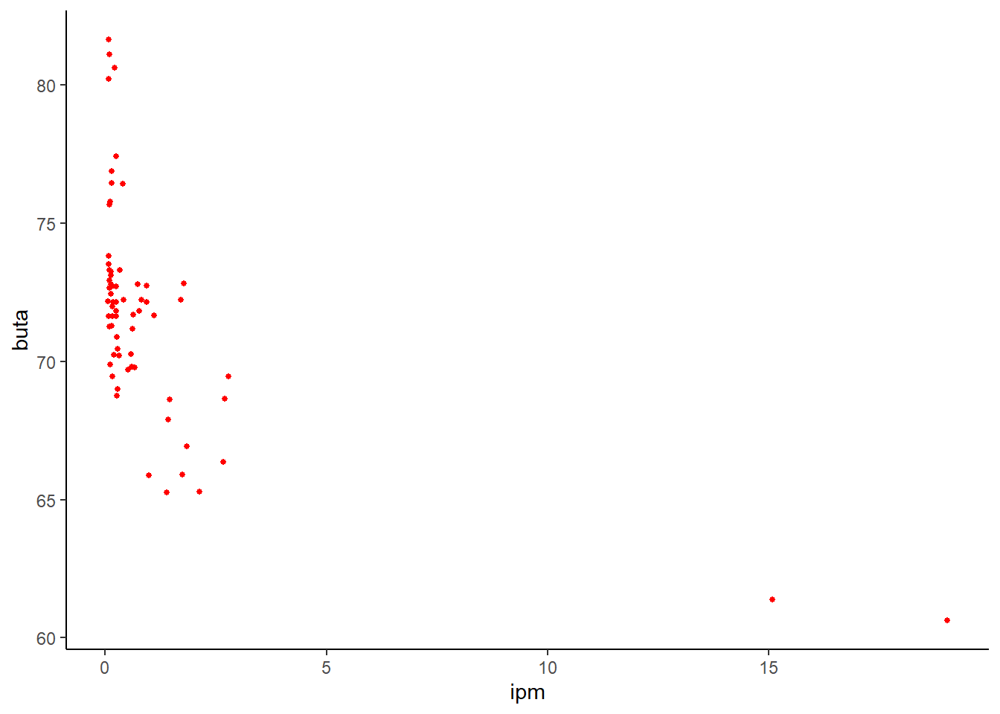

Bagaimana Tingkat Buta Huruf Usia Produktif Mempengaruhi Indeks Pembangunan Manusia (IPM) Di Indonesia Tahun 2020-2021
Metode Penelitian Politeknik APP Jakarta
Author
Daffa Rizky Awal Ramadhan
Published
January 19, 2023
1 Pendahuluan
21.1 Latar Belakang
Sebagai negara berkembang dengan populasi keempat terbesar di dunia. Dilansir dari data situs Badan Pusat Statistik (BPS), Indonesia negara dengan jumlah populasi 275,7 juta pada tahun 2022. Indonesia memiliki beberapa permasalahan, contohnya tingkat buta huruf, dalam hal ini buta huruf di usia produktif (15-44 tahun). Permasalahan buta huruf ini juga menimbulkan permasalahan lain, contohnya Indeks Pembangunan Manusia (IPM). Jikalau tingkat buta huruf meningkat maka berpengaruh pada IPM di sektor pendidikan. Sebagai contoh, dilansir dari situs BPS, tingkat buta huruf usia produktif yakni 0,73 di tahun 2021, sedangkan di tahun berikutnya mengalami peningkatan, yakni 0,75 di tahun 2022. Tingkat dan akses pendidikan yang rendah di tahun terdahulu menyebabkan usia produktif di Indonesia mengalami buta huruf. Dan untuk tingkat IPM tahun 2021 sebesar 72,29, dan di tahun berikutnya mengalami kenaikan menjadi sebesar 72,91. Sebelum mendalami kasus lebih jauh, mari ketahui apa itu IPM dan buta huruf. Dilansir dari situs BPS, IPM atau Human Developement Report (HDR) diperkenalkan oleh United Nations Development Programme (UNDP) pada tahun 1990 dan dipublikasikan secara berkala dalam laporan tahunan HDR, yang memiliki arti metode pengukuran yang digunakan untuk mengukur sejauh mana suatu negara memiliki sumber daya yang dibandingkan dengan angka harapan hidup, tingkat melek dan buta huruf, akses terhadap pendidikan, dan kesehatan. Tujuan dibuatnya/metode ini untuk mengukur keberhasilan dalam upaya membangun kualitas hidup/penduduk. IPM juga bisa menentukan level pembangunan suatu negara/wilayah. Dan untuk buta huruf, dilansir dari situs BPS, buta huruf merupakan tidak bisa membaca dan menulis kalimat sederhana suatu aksara, termasuk huruf Braille. Menurut Muhammad (2009 : 88), faktor penyebab buta huruf atau buta aksara di Indonesia adalah:
Tingginya angka putus sekolah dasar (SD);
Beratnya kondisi geografis di Indonesia;
Munculnya penyandang buta aksara baru;
Pengaruh faktor sosiologis dan sosial masyarakat;
Kembalinya seseorang menjadi buta huruf atau buta aksara.
Walaupun demikian, tingkat buta huruf berangsur-angsur menurun seiring perkembangan zaman dikarenakan infrastruktur yang sudah memadai, perkembangan teknologi informasi, mindset para orang tua yang lebih mementingkan pendidikan dan masih banyak faktor yang mempengaruhi menurunnya tingkat buta huruf. Seperti contoh data tingkat buta huruf di Indonesia tahun 2021-2022 yang dialami penduduk usia produktif terhadap IPM Indonesia tahun 2021-2022.
Tabel 1. Tingkat IPM di Indonesia 2021-2022
PROVINSI
2021
2022
ACEH
72.18
72.80
SUMATERA UTARA
72.00
72.71
SUMATERA BARAT
72.65
73.26
RIAU
72.94
73.52
JAMBI
71.63
72.14
SUMATERA SELATAN
70.24
70.90
BENGKULU
71.64
72.16
LAMPUNG
69.90
70.45
KEP. BANGKA BELITUNG
71.69
72.24
KEPULAUAN RIAU
75.79
76.46
DKI JAKARTA
81.11
81.65
JAWA BARAT
72.45
73.12
JAWA TENGAH
72.16
72.79
D I YOGYAKARTA
80.22
80.64
JAWA TIMUR
72.14
72.75
BANTEN
72.72
73.32
BALI
75.69
76.44
NUSA TENGGARA BARAT
68.65
69.46
NUSA TENGGARA TIMUR
65.28
65.90
KALIMANTAN BARAT
67.90
68.63
KALIMANTAN TENGAH
71.25
71.63
KALIMANTAN SELATAN
71.28
71.84
KALIMANTAN TIMUR
76.88
77.44
KALIMANTAN UTARA
71.19
71.83
SULAWESI UTARA
73.30
73.81
SULAWESI TENGAH
69.79
70.28
SULAWESI SELATAN
72.24
72.82
SULAWESI TENGGARA
71.66
72.23
GORONTALO
69.00
69.81
SULAWESI BARAT
66.36
66.92
MALUKU
69.71
70.22
MALUKU UTARA
68.76
69.47
PAPUA BARAT
65.26
65.89
PAPUA
60.62
61.39
Tabel 2. Tingkat buta huruf di Indonesia 2021-2022
PROVINSI
2021
2022
ACEH
0.06
0.13
SUMATERA UTARA
0.17
0.24
SUMATERA BARAT
0.10
0.12
RIAU
0.09
0.07
JAMBI
0.24
0.18
SUMATERA SELATAN
0.20
0.27
BENGKULU
0.16
0.25
LAMPUNG
0.11
0.28
KEP. BANGKA BELITUNG
0.64
0.42
KEP. RIAU
0.11
0.15
DKI JAKARTA
0.09
0.08
JAWA BARAT
0.12
0.13
JAWA TENGAH
0.25
0.74
DI YOGYAKARTA
0.07
0.22
JAWA TIMUR
0.94
0.94
BANTEN
0.14
0.33
BALI
0.09
0.40
NUSA TENGGARA BARAT
2.70
2.79
NUSA TENGGARA TIMUR
2.13
1.75
KALIMANTAN BARAT
1.43
1.46
KALIMANTAN TENGAH
0.09
0.08
KALIMANTAN SELATAN
0.15
0.24
KALIMANTAN TIMUR
0.14
0.24
KALIMANTAN UTARA
0.61
0.77
SULAWESI UTARA
0.09
0.07
SULAWESI TENGAH
0.67
0.58
SULAWESI SELATAN
1.71
1.77
SULAWESI TENGGARA
1.10
0.82
GORONTALO
0.28
0.60
SULAWESI BARAT
2.67
1.85
MALUKU
0.52
0.31
MALUKU UTARA
0.26
0.16
PAPUA BARAT
1.39
0.98
PAPUA
19.03
15.09
Berdasarkan kedua tabel diatas, penulis berspekulasi bahwa penurunan jumlah buta huruf di setiap provinsi di Indonesia berpengaruh terhadap kenaikan IPM di setiap provinsi di Indonesia pula. Begitupula sebaliknya, kenaikan jumlah buta huruf di suatu provinsi di Indonesia, akan berdampak pada penurunan IPM di suatu provinsi di Indonesia itu sendiri. Bisa kita lihat di tabel 1, di tahun 2022 hampir seluruh provinsi mengalami peningkatan di buta huruf, ini disebabkan karena adanya pandemi COVID-19 yang menyebabkan banyak dari para pelajar yang putus sekolah atau tidak melaksanakan kegiatan belajar di rumah dengan sungguh-sungguh. Tetapi walaupun hampir semua provinsi di Indonesia mengalami peningkatan dalam hal buta huruf, tidak menutupi kemungkinan IPM mengalami kenaikan, bukan penurunan. Tabel 2 memperlihatkan, semua provinsi di Indonesia mengalami kenaikan pada IPM, ini dikarenakan tolak ukur IPM bukan hanya pada tingkat buta huruf ataupun melek huruf, tetapi ada faktor kesehatan, taraf hidup, dan edukasi.
Mengetahui tingkat buta huruf merupakan salah satu langkah untuk mengetahui tingkat IPM. Maka dari itu, penulis ingin mengetahui seberapa berpengaruhnya tingkat buta huruf di Indonesia terhadap perkembangan IPM di setiap provinsi yang ada di Indonesia
2.1 Ruang lingkup
Tingkat buta huruf masyarakat di setiap provinsi di Indonesia dan juga tingkat IPM di setiap provinsi di Indonesia, itulah ruang lingkup yang akan penulis bahas pada penulisan jurnal ini. Penulis hanya akan membahas keterkaitan antara tingkat buta huruf di setiap provinsi di Indonesia dengan IPMnya. Tidak bisa dipungkiri bahwa tingkat IPM dipengaruhi tidak hanya oleh tingkat buta huruf saja, melainkan ada kesehatan, pendidikan non literasi, angka harapan hidup, lapangan pekerjaan, dan lain-lain. Tetapi penulis disini hanya akan menyinggung keterkaitan buta huruf dengan IPM.
2.2 Rumusan masalah
Seberapa besarkah tingkat buta huruf di setiap provinsi di Indonesia?
Seberapa besarkah tingkat IPM di setiap provinsi di Indonesia?
Apakah tingkat buta huruf dan IPM saling mempengaruhi satu sama lain?
2.3 Tujuan dan manfaat penelitian
Tujuan dari penelitian yang penulis lakukan adalah untuk mengetahui seberapa besarkah tingkat buta huruf dan tingkat IPM di setiap provinsi di Indonesia. Juga untuk mengetahui korelasi kedua data antara buta huruf dan IPM apakah akan saling mempengaruhi satu sama lain.
Manfaat dari penelitian yang penulis lakukan adalah agar bisa meningkatkan IPM di setiap provinsi di Indonesia dengan cara mengurangi tingkat buta huruf yang mempengaruhi pertumbuhan IPM. Dan mungkin penelitian yang penulis lakukan akan membantu para stakeholders yang turut andil dalam peningkatan IPM dan penurunan buta huruf di Indonesia seperti tenaga pengajar dasar yang sangat berperan penting dalam menurunkan tingkat buta huruf di Indonesia,
2.4 Package
Packages yang penulis gunakan untuk meregresi data antara lain sebagai berikut:
Indeks Pembangunan Manusia (IPM) adalah metode pengukuran yang digunakan untuk mengukur sejauh mana suatu negara memiliki sumber daya yang dibandingkan dengan angka harapan hidup, tingkat melek dan buta huruf, akses terhadap pendidikan, dan kesehatan yang betujuan untuk mengukur keberhasilan dalam upaya membangun kualitas hidup/penduduk. Dilansir dari situs BPS (2020), teori dan istilah IPM diperkenalkan oleh United Nations Development Programme (UNDP) pada tahun 1990. Dan sejak saat itu banyak yang berspekulasi, termasuk spekulan atau pemikir asal Indonesia dalam hal ini beliau memberikan pendapat tentang IPM berpengaruh pada sistem pendidikan di Indonesia. Menurut Todaro (1997) dalam Rubiyatno (2012), Dengan penelitiannya yang berjudul Hubungan Status dan Fasilitas Pendidikan dengan Pembangunan Manusia. Menjelaskan bahwa percepatan dan pemerataan pendidikan formal secara kuantitatif kerap diartikan sebagai kesuksesan pembangunan, mitos seperti inilah yang berkembang selama ini. Dan Wicaksono (2004), dalam Rubiyatno (2012), dengan penelitiannya yang berjudul Hubungan Status dan Fasilitas Pendidikan dengan Pembangunan Manusia. Di Indonesia pendidikan lebih dinilai sebagai status sosial daripada produktivitas. Dapat diambil garis besar, bahwa selama ini pendidikan tidak dianggap produktivitas atau investasi masa depan untuk anak, melainkan sebuah status sosial dan untuk ajang unjuk kemapuan dalam menyekolahkan anak sampai tingkat tertinggi. Padahal pendidikan merupakan dasar pendidikan (literasi) untuk membentuk generasi yang dalam hal ini melek huruf. Dengan generasi atau pribadi yang melek huruf, yang pasti mereka dapat bersaing ketika dihadapkan pendidikan yang lebih tinggi dan bisa bersaing di lapangan pekerjaan yang langsung akan berpengaruh terhadap indeks pembangunan suatu negara.
4 Metode penelitian
4.1 Data
Data yang penulis gunakan adalah dua data yang menunjukkan tingkat buta huruf dan IPM di seluruh provinsi di Indonesia.
# A tibble: 6 × 4
PROVINSI tahun buta ipm
<chr> <chr> <dbl> <dbl>
1 ACEH 2021 0.06 72.2
2 ACEH 2022 0.13 72.8
3 SUMATERA UTARA 2021 0.17 72
4 SUMATERA UTARA 2022 0.24 72.7
5 SUMATERA BARAT 2021 0.1 72.6
6 SUMATERA BARAT 2022 0.12 73.3
ggplot(data=dat,aes(x=buta,y=ipm)) +geom_point(color="red" ,size=1) +labs(tittle="Bagaimana Tingkat Buta Huruf Usia Produktif Mempengaruhi Indeks Pembangunan Manusia (IPM) Di Indonesia Tahun 2020-2021",x="ipm",y="buta") +theme_classic()

4.2 Metode analisis
Metode yang dipilih adalah regresi univariat atau Ordinary Least Square (OLS) dengan 2 variabel independen. Penelitian ini bermaksud mencari hubungan antara IPM dan Buta Huruf. Spesifikasi yang dilakukan adalah:
\[
y_{t}=\beta_0 + \beta_1 x_t+\mu_t
\] di mana \(y_t\) adalah IPM dan \(x_t\) adalah Buta Huruf.
5 Pembahasan
5.1 Pembahasan masalah
Dikarenakan penulis menggunakan metode OLS, Penulis disini hanya akan menghubungkan dan menampilkan tingkat buta huruf di setiap provinsi di Indonesia tahun 2021-2022 dan tingkat IPM di setiap provinsi di Indonesia tahun 2021-2022. Kedua data tersebut diregresi dan menampilkan data akhir atau data gabungan seperti dibawah ini.
# A tibble: 6 × 4
PROVINSI tahun buta ipm
<chr> <chr> <dbl> <dbl>
1 ACEH 2021 0.06 72.2
2 ACEH 2022 0.13 72.8
3 SUMATERA UTARA 2021 0.17 72
4 SUMATERA UTARA 2022 0.24 72.7
5 SUMATERA BARAT 2021 0.1 72.6
6 SUMATERA BARAT 2022 0.12 73.3
5.2 Analisis masalah
Hasil regresinya dari data yang penulis kumpulkan dan regresi seperti di bawah ini
reg1<-lm(ipm~buta,data=dat)summary(reg1)
Call:
lm(formula = ipm ~ buta, data = dat)
Residuals:
Min 1Q Median 3Q Max
-6.1596 -1.8833 -0.1449 0.8983 9.2131
Coefficients:
Estimate Std. Error t value Pr(>|t|)
(Intercept) 72.4991 0.4149 174.748 < 2e-16 ***
buta -0.7766 0.1347 -5.764 2.36e-07 ***
---
Signif. codes: 0 '***' 0.001 '**' 0.01 '*' 0.05 '.' 0.1 ' ' 1
Residual standard error: 3.206 on 66 degrees of freedom
Multiple R-squared: 0.3349, Adjusted R-squared: 0.3248
F-statistic: 33.23 on 1 and 66 DF, p-value: 2.358e-07
6 Kesimpulan
Kesimpulan yang bisa penulis dapat dari penelitian ini adalah, banyak dari para orang tua terdahulu berpikiran bahwa pendidikan hanya ajang unjuk kemampuan dalam mendidik dan menyekolahkan anak mereka, padahal pendidikan merupakan investasi penting untuk dasar kehidupan anak, terutama untuk literasi yang sangat menunjang pendidikan bahkan karir anak yang langsung berpengaruh pada pertumbuhan IPM suatu negara. Juga di tahun 2022 tingkat buta huruf di Indonesia mengalami kenaikan dikarenakan pandemi COVID-19 yang membuat banyak anak putus sekolah, tetapi IPM tetap mengalami trend positif atau kenaikan, karena yang mempengaruhi IPM bukan hanya pendidikan, melainkan ada beberapa faktor seperti akses masyarakat terhadap kesehatan, tersedianya lapangan kerja yang memadai, upah perkapita masyarakat, dan angka harapan hidup.
7 Referensi
Todaro (1997) dalam Rubiyatno (2012), Hubungan Status dan Fasilitas Pendidikan dengan Pembangunan Manusia. https://eprints.umm.ac.id/60422/3/BAB%20II.pdf
Wicaksono (2004), dalam Rubiyatno (2012), Hubungan Status dan Fasilitas Pendidikan dengan Pembangunan Manusia. https://eprints.umm.ac.id/60422/3/BAB%20II.pdf